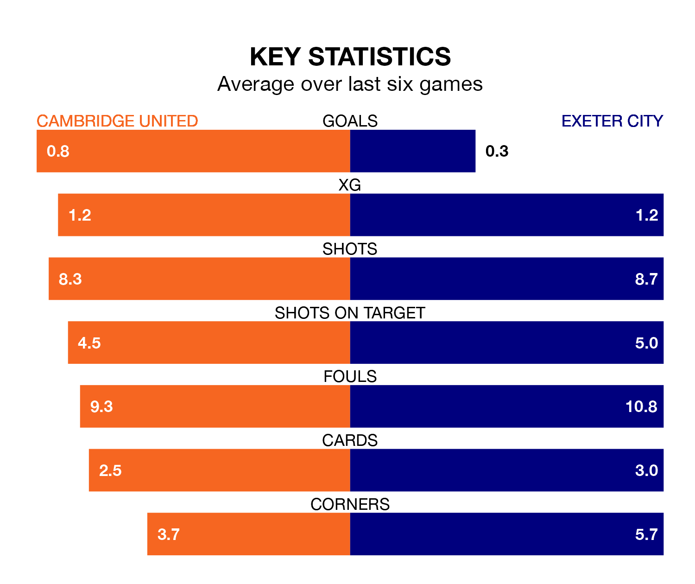

Exeter City travel to the Abbey Stadium looking to secure a first win in 13 EFL League One games against Cambridge United on late Friday.
Exeter have lost nine and drawn three matches since they last earned three points – against Cheltenham Town on September 16.
They face a Cambridge side who have won two and drawn four over that time.
Exeter are 21st in the table after 20 games, of which they have won five and drawn four, earning 19 points.
Cambridge are four places ahead of City in 17th, with six wins and six draws putting them on 24 points.
In the last five years, Cambridge and Exeter have played each other on 10 occasions. Cambridge won three of them, Exeter six, and they drew once.
On average, Cambridge scored 1.0 goal and Exeter 1.5 in those matches.
Their last meeting was on February 25, when Exeter won 2-0 at home.
With 13 goals in 20 games so far this season, the away side are the league's joint-third-lowest scorers with 0.7 goals per game. And they are conceding more than average, letting in 31 goals at a rate of 1.6 per game.
United are also below average scorers, with 0.9 goals per game, compared to a league average of 1.3. They have conceded 1.3 goals per game.
Cambridge's last match was on Saturday, a 2-1 win against Blackpool, with Elias Kachunga and Gassan Ahadme Yahyai getting the goals for Cambridge.
Exeter drew 1-1 with Stevenage last time out, also on Saturday, with Yanic Wildschut on the scoresheet.
Friday's match will be refereed by Darren Drysdale, who has taken charge of five EFL League One games so far this season, issuing one red card and booking 20 players. He has not awarded any penalties.
The last Cambridge game Drysdale refereed was a 1-0 home win against Reading on September 4. He is yet to oversee a match featuring Exeter this season.
